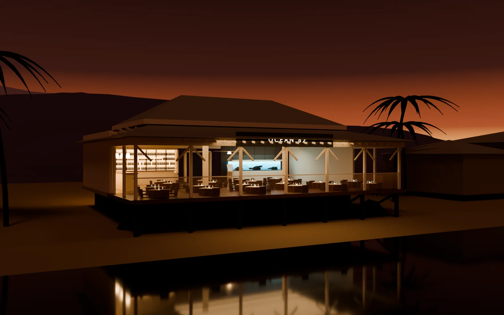

La maison
Une table française posée sur la baie.
Alliant simplicité et design chic, Ocean 82 est un restaurant français aux saveurs de la mer, directement sur la baie de Grand Case.
- La cuisine
- Chef Franck Vuillemin
- La cave
- Grands crus
- Le vivier
- Langoustes